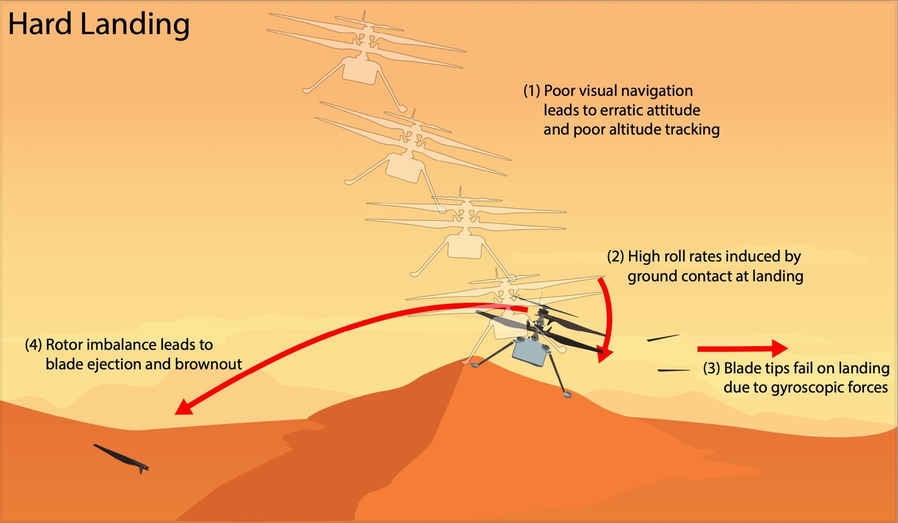

Ingenuity · Flight 72
What actually broke Ingenuity

On 18 January 2024, Ingenuity flew for the seventy-second and last time. The plan was modest: a short vertical hop to check the flight systems and photograph the surroundings. The telemetry shows it did exactly that — climbing to 12 metres, hovering, taking its pictures. It began descending 19 seconds in. By 32 seconds it was back on the surface and had stopped talking to Earth.
What makes the failure worth studying is that nothing exotic went wrong. Engineers at JPL and AeroVironment traced it to a chain in which each step is unremarkable on its own.
- The ground gave the navigation system nothing to hold onto. Ingenuity tracked features on the surface to estimate its own motion. Over featureless, rippled sand there were no features to track.
- So it arrived moving sideways. Without a good velocity estimate, the helicopter touched down carrying significant horizontal speed — onto the slope of a sand ripple, which turned that speed into pitch and roll.
- The attitude change loaded the blades beyond design. Rotors spinning at flight speed resist being tilted, and that resistance becomes force in the blade. All four snapped at their weakest point, roughly a third of the way in from the tip.
- The rest followed mechanically. Four damaged blades meant a violently unbalanced rotor; the vibration tore what remained of one blade out at the root, and the power that imbalance demanded ended the radio link.
Read in that order, the failure is not really about blades. It is about a state estimate that degraded where the terrain offered no texture, and a touchdown that happened before anything could correct for it.
Why the blades broke: precession
Step three is the one that feels counter-intuitive, and it is worth seeing rather than reading. A spinning rotor does not respond to a tilting force the way a stationary object does — the response appears ninety degrees around the disc, and resisting it puts bending loads into the blade itself. That is gyroscopic precession, and it is why a rapid attitude change on touchdown is far more dangerous to a fast-spinning rotor than the impact alone would suggest.
Where this meets my own work
This accident sits squarely on the questions I spend my time on, which is why I wanted to write it up rather than just read it.
The failure happened in the last two seconds of a landing — the regime where ground proximity changes the aerodynamics and where a controller has the least time to react. My work on neural MPC under ground effect targets exactly that window: learning how delivered thrust changes near a surface so the controller can anticipate it rather than discover it on the way down.
The consequence — an attitude excursion triggered by contact — is the subject of my work on collision recovery, which models the instantaneous velocity jump at impact and designs the recovery around it instead of treating contact as a fault to be avoided.
And the broader lesson — that touching down on an unprepared planetary surface is the risky part — is precisely the premise of Mid-Air Helicopter Deployment, the architecture I worked on at NASA JPL. MAHD exists because arriving at the surface under your own rotors is where things go wrong, so a jetpack carries the vehicle to a controlled near-hover first.
Ingenuity was built by NASA JPL, which manages the project for NASA Headquarters, with flight-performance analysis from NASA Ames and NASA Langley, and design and components from AeroVironment, Qualcomm and SolAero. Lockheed Martin Space built the Mars Helicopter Delivery System. A full technical report on the final flight is being published by the agency.